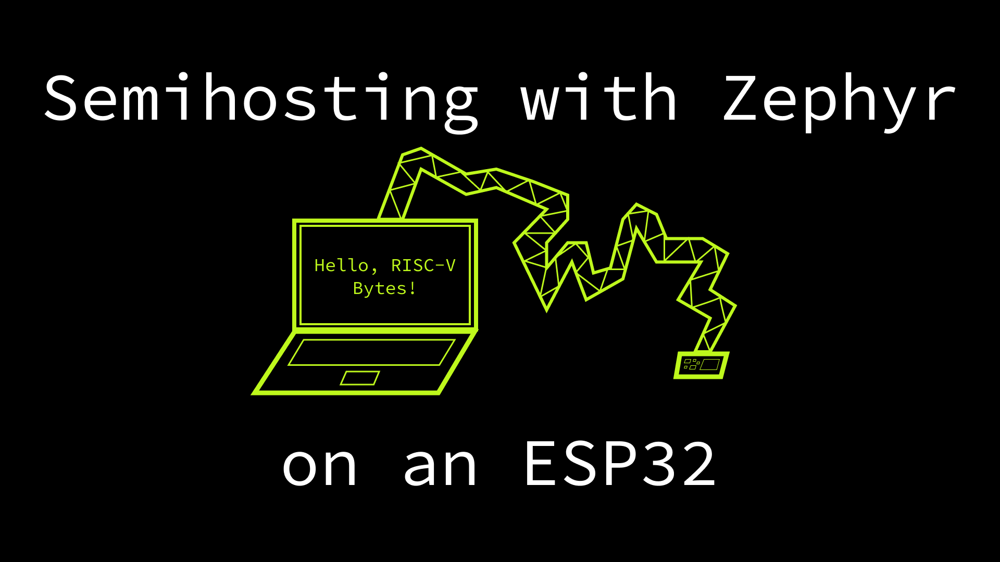
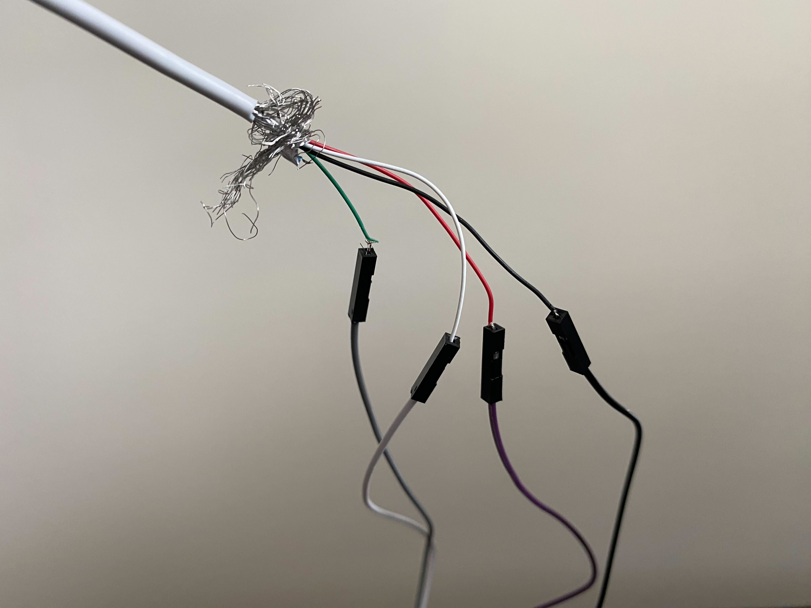
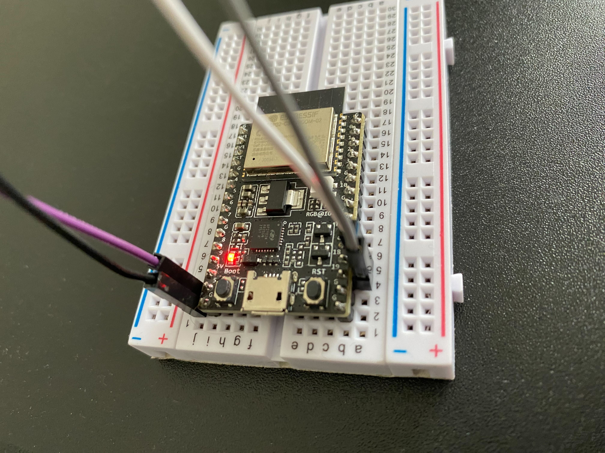

Note: all analysis and code samples used in this post correspond to the v3.3.0 release of Zephyr.

Having a good debugging workflow is critical to developing software quickly with high confidence. Fortunately, writing software for computers is often done, well, on a computer, meaning that while writing programs we can run other programs that help us understand the behavior of what we are writing. Typically the machine we are writing software for, though it may run in a data center and have a different form factor, doesn’t look so different from the machine we are writing it on. My System76 laptop is not the same as the servers racked in US East 1, but it is a close enough approximation.
However, when writing embedded software, the target machine looks quite different than the machine that the software is developed on, and it is frequently significantly more resource constrained. One option is to run an emulator, such as QEMU, on the host machine and connect your debugger. This is the strategy we have used in previous RISC-V Bytes posts, and the built-in gdbstub functionality makes connecting gdb straightforward.
There is nothing like the real hardware though, and many systems allow for debugging the software running on a device by communicating over JTAG from the host machine. Some even provide built-in USB-to-JTAG circuitry, absolving developers of the need to use additional adapters. The drawback of using real hardware is that simulating certain input and output to a program can be difficult. Furthermore, if testing against a single component of a larger system, the components providing input and output may not be available at the time of writing software.
To improve the development experience in these scenarios, some chips implement semihosting, which can greatly enhance an embedded development workflow by allowing a program running on a device to perform operations on the host.
Sections Link to heading
- Overview of Semihosting
- Zephyr Semihosting Support
- Debugger Setup
- Writing to the Host Filesystem
- Concluding Thoughts
Overview of Semihosting Link to heading
As we have explored in many posts in the RISC-V Bytes series, computer programs
are just a sequence of binary instructions that a CPU has been designed to
interpret in a specific manner. When writing software on a host machine, then
running it under a debugger, the debugger typically controls the child program
using functionality exposed by the operating system, such as
ptrace(2) on Linux.
This allows the debugger to selectively feed instructions from the child program
to the CPU, optionally injecting additional instructions or performing some
computation between issuing subsequent instructions.
When working with an embedded device, there are two systems at play: the host and the device. This complicates the architecture, but similar functionality can be accomplished, typically using interfaces such as the aforementioned JTAG or ARM Serial Wire Debug (SWD).
There is a lot of information online about JTAG, but because it can be utilized for many different functions, it is easy to get confused about what it offers on its own. I have found the OpenOCD JTAG primer to be one of the most succinct and helpful descriptions, especially for the context in which JTAG will be used in this post.
These interfaces are quite different, but both enable communication with a processor running on a device. However, the processor itself must offer debugging functionality, much like it supports executing instructions defined by its instruction set architecture (ISA). RISC-V has a dedicated debugging specification, which defines how a system can expose hardware debugging support both internally and externally.
When using an external system (i.e. host) for debugging, communication with RISC-V hardware debugging components happens over the Debug Transport Module (DTM). As shown in the diagram below, there could be multiple transports used to implement a DTM, but the specification only defines one for JTAG at this point in time.
Diagram showing optional and required components in the RISC-V debug specification.
When being controlled by an external debugger, a RISC-V hart is said to be in
Debug Mode (D), which can be considered an additional privilege
level. When
implemented, this is the maximum privilege level, as it provides even lower
level access than Machine Mode (M). While the the debug specification
details a variety of required and optional functionality, the privileged and
unprivileged specifications define
the EBREAK instruction, which is similar to the ECALL instruction we have
used in previous posts to perform system calls and trap to higher privilege
levels. The EBREAK instruction instead will transfer control to the debugging
environment, effectively implementing a software
breakpoint. This type of breakpoint
is interesting because, unlike triggers and hardware breakpoints where the
debugger is forcing the program to halt, software breakpoints, though they may
be inserted by the debugger, are the program “asking to be halted”.
While the typical purpose of this behavior is to allow for examining state at
the breakpoint, it can be thought of as a general purpose communication channel.
That is, the program can form a “request” in its state, issue an EBREAK, then
read a “response” from the debugger that has been written in the program state.
This is the basic idea behind semihosting.
Fortunately for existing debugging software, RISC-V opted to use a very similar implementation for semihosting as the one initially defined for ARM processors. The unofficial semihosting specification defines the following sequence of instructions for a program to indicate to a debugger that the encountered breakpoint is a semihosting request.
slli x0, x0, 0x1f # 0x01f01013 Entry NOP
ebreak # 0x00100073 Break to debugger
srai x0, x0, 7 # 0x40705013 NOP encoding the semihosting call number 7
On both 32-bit and 64-bit harts, the a0 register is used to specify the type
of
operation
being requested, and a1 is used to supply parameters. a0 is used to supply
responses. Depending on the type of operation, the request parameter in a1 or
the response in a0 may be either a value or a memory address of the data
block. In this manner, arbitrary data may be transferred between host and
device.
Zephyr Semihosting Support Link to heading
In the last few posts, we’ve explored the Zephyr RTOS. Zephyr conveniently offers support for semihosting on ARM and RISC-V targets using a generic interface, which we’ll use in this post to communicate with an Espressif ESP32-C3. The ESP32-C3 implements the RISC-V debug specification, and the DevKitC-02 has built-in USB-to-JTAG circuitry, meaning that we can connect gdb on our host machine to the hart on the device using OpenOCD (more on this in a bit).
The Zephyr semihosting interface is defined in semihost.h, where operation
enums are defined, as well as signatures for a few common operations. A codensed
representation is provided below.
include/zephyr/arch/common/semihost.h (ref)
long semihost_exec(enum semihost_instr instr, void *args);
char semihost_poll_in(void);
void semihost_poll_out(char c);
long semihost_open(const char *path, long mode);
long semihost_close(long fd);
long semihost_flen(long fd);
long semihost_seek(long fd, long offset);
long semihost_read(long fd, void *buf, long len);
long semihost_write(long fd, const void *buf, long len);
In reality, all functions listed are just helpful wrappers around
semihost_exec, meaning that they can all be implemented generically, while
semihost_exec must be defined for each architecture. For example, the
implementation of semihost_close looks as follows.
arch/common/semihost.c (ref)
long semihost_close(long fd)
{
struct semihost_close_args args = {
.fd = fd
};
return semihost_exec(SEMIHOST_CLOSE, &args);
}
The corresponding semihost_exec implementation for RISC-V mirrors what we
previously saw in the unofficial specification, written in C with inline
assembly.
arch/riscv/core/semihost.c (ref)
/*
* QEMU requires that the semihosting trap instruction sequence, consisting of
* three uncompressed instructions, lie in the same page, and refuses to
* interpret the trap sequence if these instructions are placed across two
* different pages.
*
* The `semihost_exec` function, which occupies 12 bytes, is aligned at a
* 16-byte boundary to ensure that the three trap sequence instructions are
* never placed across two different pages.
*/
long __aligned(16) semihost_exec(enum semihost_instr instr, void *args)
{
register unsigned long a0 __asm__ ("a0") = instr;
register void *a1 __asm__ ("a1") = args;
register long ret __asm__ ("a0");
__asm__ volatile (
".option push\n\t"
".option norvc\n\t"
"slli zero, zero, 0x1f\n\t"
"ebreak\n\t"
"srai zero, zero, 0x7\n\t"
".option pop"
: "=r" (ret) : "r" (a0), "r" (a1) : "memory");
return ret;
}
Debugger Setup Link to heading
While the ESP32-C3-DevKitC-02 does have built-in USB-to-JTAG support, it cannot
be accessed over the built-in Micro-USB port. Instead, a dual-channel USB
interface is available on the GPIO18 (D-) and GPIO19 (D+) pins, meaning that
a single connection can be used to simultaneously provide USB terminal and JTAG
access. I unfortunately did not have a USB breakout cable on hand, so I had to
pull out the wire cutters / strippers.

Picture of my heinous wire-stripping job.
After exposing the wires, I used female-to-male jumpers to connect D-, D+,
5V, and GND to a breadboard where I had placed the development kit. I
plugged it into my host and saw signs of life!

Picture of LED lit up on the ESP32-C3-DevKitC-02 with USB wires attached to appropriate pins via breadboard.
There is an excellent JTAG debugging guide hidden in the the ESP32-C3 documentation that explains setup, but if you followed along with the previous Exploring a Custom ESP32 Bootloader and Zephyr on the ESP32 posts, you should already have all of your Espressif and Zephyr tools installed.
$ ls ~/.espressif/
dist espidf.constraints.v5.1.txt idf-env.json python_env tools
$ ls ~/.local/zephyr-sdk-0.16.0/
arm-zephyr-eabi cmake environment-setup-x86_64-pokysdk-linux riscv64-zephyr-elf sdk_toolchains sdk_version setup.sh sysroots version-x86_64-pokysdk-linux zephyr-sdk-x86_64-hosttools-standalone-0.9.sh
With the USB cable connected to the host machine, we should be able to find the device.
$ lsusb | grep Espressif
Bus 002 Device 008: ID 303a:1001 Espressif USB JTAG/serial debug unit
One tool we haven’t used in previous posts is Open On-Chip Debugger (OpenOCD). OpenOCD is both magical and maddening. It is magical in that it enables communicating with a wide variety of hardware, and maddening in that vendors will frequently fork the project and deliver custom distributions, meaning the you’ll quickly find yourself with many builds of the tool on your local machine. Espressif follows this pattern by providing their own OpenOCD build, which is included in the previously acquired tooling.
OpenOCD is intended to be configuration driven, and there are three types of
configuration
files
that inform how the software will talk with a device: board, interface,
and target. The relevant configuration for the ESP32-C3 can be found in the
OpenOCD scripts directory. The one we will actually reference is the board
file.
~/.espressif/tools/openocd-esp32/v0.12.0-esp32-20230313/openocd-esp32/share/openocd/scripts/board/esp32c3-builtin.cfg
# SPDX-License-Identifier: GPL-2.0-or-later
#
# Example OpenOCD configuration file for ESP32-C3 connected via builtin USB-JTAG adapter.
#
# For example, OpenOCD can be started for ESP32-C3 debugging on
#
# openocd -f board/esp32c3-builtin.cfg
#
# Source the JTAG interface configuration file
source [find interface/esp_usb_jtag.cfg]
# Source the ESP32-C3 configuration file
source [find target/esp32c3.cfg]
For the ESP32-C3 “built-in”, the board file simply references the interface, which is USB /
JTAG, and the chip, which is the ESP32-C3. The interface file is relatively
uninteresting, though you will notice it matches our lsusb output above.
~/.espressif/tools/openocd-esp32/v0.12.0-esp32-20230313/openocd-esp32/share/openocd/scripts/interface/esp_usb_jtag.cfg
# SPDX-License-Identifier: GPL-2.0-or-later
#
# ESP32-C3 builtin USB-JTAG adapter
#
adapter driver esp_usb_jtag
espusbjtag vid_pid 0x303a 0x1001
espusbjtag caps_descriptor 0x2000
#max speed
adapter speed 40000
The target file, on the other hand, provides extensive information about how the debug functionality works, and provides configuration to make gdb work properly. We don’t break down all parts in-depth in this post, but we’ll explore more about how OpenOCD works in the future.
~/.espressif/tools/openocd-esp32/v0.12.0-esp32-20230313/openocd-esp32/share/openocd/scripts/target/esp32c3.cfg
# SPDX-License-Identifier: GPL-2.0-or-later
#
# The ESP32-C3 only supports JTAG.
transport select jtag
set CPU_MAX_ADDRESS 0xFFFFFFFF
source [find bitsbytes.tcl]
source [find memory.tcl]
source [find mmr_helpers.tcl]
# Source the ESP common configuration file
source [find target/esp_common.cfg]
# Target specific registers
set EFUSE_MAC_ADDR_REG 0x60008844
if { [info exists CHIPNAME] } {
set _CHIPNAME $CHIPNAME
} else {
set _CHIPNAME esp32c3
}
if { [info exists CPUTAPID] } {
set _CPUTAPID $CPUTAPID
} else {
set _CPUTAPID 0x00005c25
}
set _TARGETNAME $_CHIPNAME
set _CPUNAME cpu
set _TAPNAME $_CHIPNAME.$_CPUNAME
jtag newtap $_CHIPNAME $_CPUNAME -irlen 5 -expected-id $_CPUTAPID
proc esp32c3_wdt_disable { } {
# Halt event can occur during config phase (before "init" is done).
# Ignore it since mww commands don't work at that time.
if { [string compare [command mode] config] == 0 } {
return
}
# Timer Group 0 & 1 WDTs
mww 0x6001f064 0x50D83AA1
mww 0x6001F048 0
mww 0x60020064 0x50D83AA1
mww 0x60020048 0
# RTC WDT
mww 0x600080a8 0x50D83AA1
mww 0x60008090 0
# SWD
mww 0x600080b0 0x8F1D312A
mww 0x600080ac 0x84B00000
}
proc esp32c3_soc_reset { } {
# This procedure does "digital system reset", i.e. resets
# all the peripherals except for the RTC block.
# It is called from reset-assert-post target event callback,
# after assert_reset procedure was called.
# Since we need the hart to to execute a write to RTC_CNTL_SW_SYS_RST,
# temporarily take it out of reset. Save the dmcontrol state before
# doing so.
riscv dmi_write 0x10 0x80000001
# Trigger the reset
mww 0x60008000 0x9c00a000
# Workaround for stuck in cpu start during calibration.
# By writing zero to TIMG_RTCCALICFG_REG, we are disabling calibration
mww 0x6001F068 0
# Wait for the reset to happen
sleep 10
poll
# Disable the watchdogs again
esp32c3_wdt_disable
# Here debugger reads allresumeack and allhalted bits as set (0x330a2)
# We will clean allhalted state by resuming the core.
riscv dmi_write 0x10 0x40000001
# Put the hart back into reset state. Note that we need to keep haltreq set.
riscv dmi_write 0x10 0x80000003
}
proc esp32c3_memprot_is_enabled { } {
# IRAM0 PMS lock, SENSITIVE_CORE_X_IRAM0_PMS_CONSTRAIN_0_REG
if { [get_mmr_bit 0x600C10A8 0] != 0 } {
return 1
}
# DRAM0 PMS lock, SENSITIVE_CORE_X_DRAM0_PMS_CONSTRAIN_0_REG
if { [get_mmr_bit 0x600C10C0 0] != 0 } {
return 1
}
return 0
}
if { $_RTOS == "none" } {
target create $_TARGETNAME esp32c3 -chain-position $_TAPNAME
} else {
target create $_TARGETNAME esp32c3 -chain-position $_TAPNAME -rtos $_RTOS
}
$_TARGETNAME configure -event reset-assert-post { esp32c3_soc_reset }
$_TARGETNAME configure -event halted {
esp32c3_wdt_disable
esp halted_event_handler
}
$_TARGETNAME configure -event examine-end {
# Need this to handle 'apptrace init' syscall correctly because semihosting is not enabled by default
arm semihosting enable
arm semihosting_resexit enable
if { [info exists _SEMIHOST_BASEDIR] } {
if { $_SEMIHOST_BASEDIR != "" } {
arm semihosting_basedir $_SEMIHOST_BASEDIR
}
}
}
$_TARGETNAME configure -event gdb-detach {
$_TARGETNAME esp gdb_detach_handler
}
$_TARGETNAME configure -event gdb-attach {
# 'halt' is necessary to auto-probe flash bank when GDB is connected and generate proper memory map
halt 1000
if { [esp32c3_memprot_is_enabled] } {
# 'reset halt' to disable memory protection and allow flasher to work correctly
echo "Memory protection is enabled. Reset target to disable it..."
reset halt
}
# by default mask interrupts while stepping
riscv set_maskisr steponly
}
# stub flasher may need a lot of memory in case of compressed writes to flash (~107KB):
# - for apptrace: 2x16KB up buffers + 32KB down buffer
# - for uncompression: 32KB for unzip buffer size + 11KB for inflator data structs
# TODO: In general when up buffers are swapped apptrace copies `host->target` data from new up buffer to down buffer to free space for `target->host` data.
# In case of flash writes we use apptrace transfers in one direction only. So we can avoid copying and re-use up buffer instead of down one.
configure_esp_workarea $_TARGETNAME 0x40380000 0x4000 0x3FC84000 0x20000
configure_esp_flash_bank $_TARGETNAME $_TARGETNAME $_FLASH_SIZE
if { $_FLASH_SIZE == 0 } {
gdb_breakpoint_override hard
}
riscv set_reset_timeout_sec 2
riscv set_command_timeout_sec 5
riscv set_mem_access sysbus progbuf abstract
riscv set_ebreakm on
riscv set_ebreaks on
riscv set_ebreaku on
We can reference the board file to ensure OpenOCD has all the necessary information to connect to the device successfully.
$ ~/.espressif/tools/openocd-esp32/v0.12.0-esp32-20230313/openocd-esp32/bin/openocd -f ~/.espressif/tools/openocd-esp32/v0.12.0-esp32-20230313/openocd-esp32/share/openocd/scripts/board/esp32c3-builtin.cfg
Open On-Chip Debugger v0.12.0-esp32-20230313 (2023-03-13-09:07)
Licensed under GNU GPL v2
For bug reports, read
http://openocd.org/doc/doxygen/bugs.html
Info : only one transport option; autoselecting 'jtag'
Info : esp_usb_jtag: VID set to 0x303a and PID to 0x1001
Info : esp_usb_jtag: capabilities descriptor set to 0x2000
Warn : Transport "jtag" was already selected
Info : Listening on port 6666 for tcl connections
Info : Listening on port 4444 for telnet connections
Info : esp_usb_jtag: serial (58:CF:79:16:7D:A0)
Info : esp_usb_jtag: Device found. Base speed 40000KHz, div range 1 to 255
Info : clock speed 40000 kHz
Info : JTAG tap: esp32c3.cpu tap/device found: 0x00005c25 (mfg: 0x612 (Espressif Systems), part: 0x0005, ver: 0x0)
Info : datacount=2 progbufsize=16
Info : Examined RISC-V core; found 1 harts
Info : hart 0: XLEN=32, misa=0x40101104
Info : starting gdb server for esp32c3 on 3333
Info : Listening on port 3333 for gdb connections
We can now connect gdb to port 3333, just as we did when working with
QEMU. However, before
doing so, we need to write some software to debug!
Writing to the Host Filesystem Link to heading
Our Zephyr semihosting project will look similar to the “Hello, RISC-V Bytes!” example, but this time instead of printing to the UART console, we’ll write to a file on the host system.
zephyr-riscv-semihosting
.
├── CMakeLists.txt
├── gdbinit
├── prj.conf
├── src
│ └── main.c
The new files are prj.conf and gdbinit. The former is used to enable
semihosting
support,
which is disabled by default for the EPS32-C3 in Zephyr.
prj.conf
CONFIG_SEMIHOST=y
gdbinit is a set of startup commands provided by Espressif that makes getting
started debugging easier. It first connects to OpenOCD’s gdbserver, then
performs some configuration before instructing OpenOCD to reset the hart and
immediately halt startup (mon reset halt). After flushing registers, the thb
command is used to set a temporary hardware breakpoint at main, meaning that
the first time we encounter main an exception should be triggered, then that
hardware breakpoint should be discarded. Lastly, the c command is used to
continue util we hit that hardware breakpoint.
gdbinit
target remote :3333
set remote hardware-watchpoint-limit 2
mon reset halt
flushregs
thb main
c
The only change in CMakeLists is the name of the project.
cmake_minimum_required(VERSION 3.20.0)
find_package(Zephyr 3.3.0 REQUIRED)
project(zephyr-riscv-semihosting)
target_sources(app PRIVATE src/main.c)
The program itself is a fairly minimal adaptation of the example from the
Zephyr semihosting
guide,
and likely looks familiar to basic file input / ouput code you may have written
before. We start by opening a file for writing text (SEMIHOST_OPEN_WT), write
the contents of our buffer, then close the file.
main.c
#include <zephyr/arch/common/semihost.h>
#include <zephyr/kernel.h>
int main(void) {
const char *path = "./semihost.txt";
long fd, write;
uint8_t buffer[] = {'H', 'e', 'l', 'l', 'o', ',', ' ', 'R', 'I', 'S', 'C',
'-', 'V', ' ', 'B', 'y', 't', 'e', 's', '!', '\n'};
fd = semihost_open(path, SEMIHOST_OPEN_WB);
if (fd < 0) {
return -ENOENT;
}
write = semihost_write(fd, buffer, 21);
if (write < 0) {
return -ENOENT;
}
semihost_close(fd);
return 0;
}
Note: we use “write binary” (
WB) instead of “write text” (WT) becausetis not supported as a mode in the ARM semihosting specification.
Now we can build the project using west as we have done in the past.
$ export ZEPHYR_BASE=~/code/github.com/zephyrproject/workspaces/v3.3.0/zephyr
$ west build -b esp32c3_devkitm
west build -b esp32c3_devkitm
-- west build: generating a build system
Loading Zephyr default modules (Zephyr base).
-- Application: /home/hasheddan/code/github.com/hasheddan/zephyr-riscv-semihosting
-- CMake version: 3.22.1
-- Found Python3: /usr/bin/python3.10 (found suitable exact version "3.10.6") found components: Interpreter
-- Cache files will be written to: /home/hasheddan/.cache/zephyr
-- Zephyr version: 3.3.0 (/home/hasheddan/code/github.com/zephyrproject/workspaces/v3.3.0/zephyr)
-- Found west (found suitable version "1.0.0", minimum required is "0.7.1")
-- Board: esp32c3_devkitm
-- ZEPHYR_TOOLCHAIN_VARIANT not set, trying to locate Zephyr SDK
-- Found host-tools: zephyr 0.16.0 (/home/hasheddan/.local/zephyr-sdk-0.16.0)
-- Found toolchain: zephyr 0.16.0 (/home/hasheddan/.local/zephyr-sdk-0.16.0)
-- Found Dtc: /home/hasheddan/.local/zephyr-sdk-0.16.0/sysroots/x86_64-pokysdk-linux/usr/bin/dtc (found suitable version "1.6.0", minimum required is "1.4.6")
-- Found BOARD.dts: /home/hasheddan/code/github.com/zephyrproject/workspaces/v3.3.0/zephyr/boards/riscv/esp32c3_devkitm/esp32c3_devkitm.dts
-- Generated zephyr.dts: /home/hasheddan/code/github.com/hasheddan/zephyr-riscv-semihosting/build/zephyr/zephyr.dts
-- Generated devicetree_generated.h: /home/hasheddan/code/github.com/hasheddan/zephyr-riscv-semihosting/build/zephyr/include/generated/devicetree_generated.h
-- Including generated dts.cmake file: /home/hasheddan/code/github.com/hasheddan/zephyr-riscv-semihosting/build/zephyr/dts.cmake
Parsing /home/hasheddan/code/github.com/zephyrproject/workspaces/v3.3.0/zephyr/Kconfig
Loaded configuration '/home/hasheddan/code/github.com/zephyrproject/workspaces/v3.3.0/zephyr/boards/riscv/esp32c3_devkitm/esp32c3_devkitm_defconfig'
Merged configuration '/home/hasheddan/code/github.com/hasheddan/zephyr-riscv-semihosting/prj.conf'
Configuration saved to '/home/hasheddan/code/github.com/hasheddan/zephyr-riscv-semihosting/build/zephyr/.config'
Kconfig header saved to '/home/hasheddan/code/github.com/hasheddan/zephyr-riscv-semihosting/build/zephyr/include/generated/autoconf.h'
-- The C compiler identification is GNU 12.2.0
-- The CXX compiler identification is GNU 12.2.0
-- The ASM compiler identification is GNU
-- Found assembler: /home/hasheddan/.local/zephyr-sdk-0.16.0/riscv64-zephyr-elf/bin/riscv64-zephyr-elf-gcc
-- Configuring done
-- Generating done
-- Build files have been written to: /home/hasheddan/code/github.com/hasheddan/zephyr-riscv-semihosting/build
-- west build: building application
[1/181] Preparing syscall dependency handling
[2/181] Generating include/generated/version.h
-- Zephyr version: 3.3.0 (/home/hasheddan/code/github.com/zephyrproject/workspaces/v3.3.0/zephyr), build: 07c6af3b8c35
[164/181] Performing configure step for 'EspIdfBootloader'
...
-- Build files have been written to: /home/hasheddan/code/github.com/hasheddan/zephyr-riscv-semihosting/build/esp-idf/build/bootloader
[165/181] Performing build step for 'EspIdfBootloader'
[1/88] Generating project_elf_src_esp32c3.c
...
[87/88] Generating binary image from built executable
esptool.py v3.3
Creating esp32c3 image...
Merged 1 ELF section
Successfully created esp32c3 image.
Generated /home/hasheddan/code/github.com/hasheddan/zephyr-riscv-semihosting/build/esp-idf/build/bootloader/bootloader.bin
[88/88] cd /home/hasheddan/code/github.com/hasheddan/zephyr-riscv-semihosting/build/esp-idf/build/bootloader/esp-idf/esptool_py && /usr/bin/python3.10 /home/hasheddan/code/github.com/zephyrproject/workspaces/v3.3.0/modules/hal/espressif/components/partition_table/check_sizes.py --offset 0x8000 bootloader 0x0 /home/hasheddan/code/github.com/hasheddan/zephyr-riscv-semihosting/build/esp-idf/build/bootloader/bootloader.bin
Bootloader binary size 0x4ba0 bytes. 0x3460 bytes (41%) free.
[171/181] Linking C executable zephyr/zephyr_pre0.elf
[175/181] Linking C executable zephyr/zephyr_pre1.elf
[181/181] Linking C executable zephyr/zephyr.elf
Memory region Used Size Region Size %age Used
mcuboot_hdr: 32 B 32 B 100.00%
metadata: 28 B 32 B 87.50%
ROM: 32560 B 4194240 B 0.78%
iram0_0_seg: 11536 B 320 KB 3.52%
irom0_0_seg: 83792 B 4194272 B 2.00%
drom0_0_seg: 2024 B 4194240 B 0.05%
dram0_0_seg: 21428 B 320 KB 6.54%
rtc_iram_seg: 0 GB 8 KB 0.00%
IDT_LIST: 0 GB 8 KB 0.00%
esptool.py v3.3
Creating esp32c3 image...
Merged 6 ELF sections
Successfully created esp32c3 image.
Then flash the program with west flash.
Note: I had to disconnect OpenOCD and reset the board via the
RSTbutton to getwest flashto work properly.
$ west flash
-- west flash: rebuilding
ninja: no work to do.
-- west flash: using runner esp32
-- runners.esp32: Flashing esp32 chip on None (921600bps)
esptool.py v3.3
Found 1 serial ports
Serial port /dev/ttyACM0
Connecting...
Detecting chip type... ESP32-C3
Chip is ESP32-C3 (revision 3)
Features: Wi-Fi
Crystal is 40MHz
MAC: 58:cf:79:16:7d:a0
Uploading stub...
Running stub...
Stub running...
Changing baud rate to 921600
Changed.
Configuring flash size...
Auto-detected Flash size: 4MB
Flash will be erased from 0x00000000 to 0x00004fff...
Flash will be erased from 0x00008000 to 0x00008fff...
Flash will be erased from 0x00010000 to 0x00034fff...
Flash params set to 0x0220
Wrote 32768 bytes at 0x00000000 in 0.4 seconds (734.3 kbit/s)...
Hash of data verified.
Wrote 16384 bytes at 0x00008000 in 0.2 seconds (763.2 kbit/s)...
Hash of data verified.
Wrote 163840 bytes at 0x00010000 in 1.6 seconds (808.7 kbit/s)...
Hash of data verified.
Leaving...
Hard resetting via RTS pin...
With the software running on the board, we can connect gdb to OpenOCD by passing
the gdbinit script and specifying the ELF file to get debugging symbols.
$ ~/.espressif/tools/riscv32-esp-elf-gdb/12.1_20221002/riscv32-esp-elf-gdb/bin/riscv32-esp-elf-gdb -x gdbinit ../zephyr-riscv-semihosting/build/zephyr/zephyr.elf
GNU gdb (esp-gdb) 12.1_20221002
Copyright (C) 2022 Free Software Foundation, Inc.
License GPLv3+: GNU GPL version 3 or later <http://gnu.org/licenses/gpl.html>
This is free software: you are free to change and redistribute it.
There is NO WARRANTY, to the extent permitted by law.
Type "show copying" and "show warranty" for details.
This GDB was configured as "--host=x86_64-linux-gnu --target=riscv32-esp-elf".
Type "show configuration" for configuration details.
For bug reporting instructions, please see:
<https://www.gnu.org/software/gdb/bugs/>.
Find the GDB manual and other documentation resources online at:
<http://www.gnu.org/software/gdb/documentation/>.
For help, type "help".
Type "apropos word" to search for commands related to "word"...
Reading symbols from ../zephyr-riscv-semihosting/build/zephyr/zephyr.elf...
arch_system_halt (reason=reason@entry=0) at /home/hasheddan/code/github.com/zephyrproject/workspaces/v3.3.0/zephyr/kernel/fatal.c:32
32 for (;;) {
JTAG tap: esp32c3.cpu tap/device found: 0x00005c25 (mfg: 0x612 (Espressif Systems), part: 0x0005, ver: 0x0)
Reset cause (3) - (Software core reset)
Warning: 'flushregs', an alias for the command 'maintenance flush register-cache', is deprecated.
Use 'maintenance flush register-cache'.
Hardware assisted breakpoint 1 at 0x42010038: file /home/hasheddan/code/github.com/hasheddan/zephyr-riscv-semihosting/src/main.c, line 7.
Temporary breakpoint 1, main () at /home/hasheddan/code/github.com/hasheddan/zephyr-riscv-semihosting/src/main.c:7
7 uint8_t buffer[] = {'H', 'e', 'l', 'l', 'o', ',', ' ', 'R', 'I', 'S',
(gdb)
The establishing of the connection can be observed in the OpenOCD logs.
Info : accepting 'gdb' connection on tcp/3333
Info : [esp32c3] Halt cause (3) - (Hardware Breakpoint/Watchpoint or EBREAK)
Warn : No symbols for FreeRTOS!
Info : [esp32c3] Halt cause (3) - (Hardware Breakpoint/Watchpoint or EBREAK)
Info : [esp32c3] Found 8 triggers
Info : Flash mapping 0: 0x20040 -> 0x3c000040, 1 KB
Info : Flash mapping 1: 0x30020 -> 0x42010020, 17 KB
Info : [esp32c3] Halt cause (3) - (Hardware Breakpoint/Watchpoint or EBREAK)
Info : Auto-detected flash bank 'esp32c3.flash' size 4096 KB
Info : Using flash bank 'esp32c3.flash' size 4096 KB
Info : [esp32c3] Halt cause (3) - (Hardware Breakpoint/Watchpoint or EBREAK)
Info : Flash mapping 0: 0x20040 -> 0x3c000040, 1 KB
Info : Flash mapping 1: 0x30020 -> 0x42010020, 17 KB
Info : Using flash bank 'esp32c3.irom' size 20 KB
Info : [esp32c3] Halt cause (3) - (Hardware Breakpoint/Watchpoint or EBREAK)
Info : Flash mapping 0: 0x20040 -> 0x3c000040, 1 KB
Info : Flash mapping 1: 0x30020 -> 0x42010020, 17 KB
Info : Using flash bank 'esp32c3.drom' size 4 KB
Warn : negative reply, retrying
Warn : Prefer GDB command "target extended-remote :3333" instead of "target remote :3333"
Warn : RTOS FreeRTOS not detected. (GDB could not find symbol 'pxReadyTasksLists')
Info : JTAG tap: esp32c3.cpu tap/device found: 0x00005c25 (mfg: 0x612 (Espressif Systems), part: 0x0005, ver: 0x0)
Info : Reset cause (3) - (Software core reset)
Error: Don't have the number of threads in FreeRTOS!
Just like when we are debugging locally, we are able to step through the program. Stepping twice will move us past the initial file open operation.
Note: you may see a
Don't have the number of threads in FreeRTOS!warning emitted from gdb. These can safely be ignored for our scenario.
(gdb) n
Note: automatically using hardware breakpoints for read-only addresses.
10 fd = semihost_open(path, SEMIHOST_OPEN_WB);
(gdb) n
11 if (fd < 0) {
At this point, we have already exercised semihosting once, and we should be able
to see the semihost.txt file on the host in the same directory where gdb is
running, though the contents should be empty.
$ ls -la semihost.txt
-rw-r--r-- 1 hasheddan hasheddan 0 May 29 17:55 semihost.txt
To see the instructions that were executed and resulted in the creation of
semihost.txt, we can instruct gdb to disassemble the function.
(gdb) disass semihost_open
Dump of assembler code for function semihost_open:
0x420100a8 <+0>: addi sp,sp,-32
0x420100ac <+4>: sw ra,28(sp)
0x420100b0 <+8>: sw a1,8(sp)
0x420100b4 <+12>: sw a0,4(sp)
0x420100b8 <+16>: auipc ra,0xfe373
0x420100bc <+20>: jalr -1284(ra) # 0x40382bb4 <strlen>
0x420100c0 <+24>: sw a0,12(sp)
0x420100c4 <+28>: addi a1,sp,4
0x420100c8 <+32>: li a0,1
0x420100cc <+36>: jal ra,0x42010020 <semihost_exec>
0x420100d0 <+40>: lw ra,28(sp)
0x420100d4 <+44>: addi sp,sp,32
0x420100d8 <+48>: ret
End of assembler dump.
After the prologue, the address of the data block for the path and mode
parameters is stored in a1, while the li a0,1 sets the operation to be
performed to
SEMIHOST_OPEN.
Execution then jumps to to semihost_exec, where the actual semihosting
instruction sequence is performed.
(gdb) disass semihost_exec
Dump of assembler code for function semihost_exec:
0x42010020 <+0>: slli zero,zero,0x1f
0x42010024 <+4>: ebreak
0x42010028 <+8>: srai zero,zero,0x7
0x4201002c <+12>: ret
End of assembler dump.
The following semihosting operations follow the same pattern. If we continue,
the write and file close will be executed and main will return, causing the
program to sit in the idle thread.
(gdb) c
Continuing.
^C
Program received signal SIGINT, Interrupt.
0x420104fc in arch_cpu_idle () at /home/hasheddan/code/github.com/zephyrproject/workspaces/v3.3.0/zephyr/soc/riscv/esp32c3/idle.c:27
27 }
Now if we examine the contents of semihost.txt, we should see our message!
$ cat semihost.txt
Hello, RISC-V Bytes!
Concluding Thoughts Link to heading
We have only scratched the surface of cases where semihosting can be useful when working with embedded systems. For example, Zephyr supports using semihosting as a console driver. However, with knowledge of its general purpose input / output capabilities, we can start to utilize it as a tool across projects.
As always, these posts are meant to serve as a useful resource for folks who are interested in learning more about RISC-V and low-level software in general. If I can do a better job of reaching that goal, or you have any questions or comments, please feel free to send me a message @hasheddan Twitter, @hasheddan@types.pl on Mastodon, or @danielmangum.com on Bluesky!